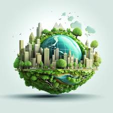

Confira:
Plantação e alimentação: cultivo do campo
Você já parou para pensar em como é o processo de alimento até ele chegar na cidade?

Principais recursos: ambos se beneficiam
Com os passar dos anos, avanços no mundo são cada vez maiores, fazendo com que a população compreenda a importância e os recursos que o campo pode oferecer.

Influência global
A relação entre campo e cidade trás beneficios no mundo não só no meio alimenticio e cotidiano, mas no emocional da sociedade, assim tendo uma grande influência no mundo.